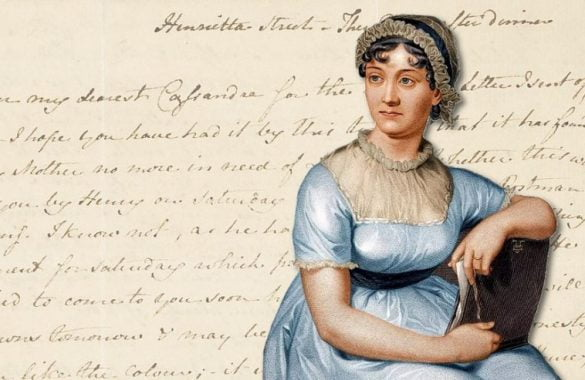

JANE AUSTEN
Jane Austen nasceu em 16 de dezembro de 1775, em Steventon, Inglaterra. Seu pai, o clérigo George Austen (1731-1805), incentivava os oito filhos, inclusive as duas meninas, a estudarem. A mãe da escritora, Cassandra Austen (1739-1827), escrevia
versos satíricos. Desse modo, Jane estava inserida em um universo rural e clerical, mas cercada também pela arte e pelo conhecimento. Em 1787, Jane Austen começou a escrever, como atestam alguns de seus manuscritos. Mas foi em 1795 que ela
iniciou a escrita do seu primeiro grande romance — Razão e sensibilidade. Entre 1796 e 1797, escreveu Orgulho e preconceito. Seu pai encaminhou tal obra a uma editora, mas ela foi recusada. A escritora nunca se casou, mas, em 1802, aceitou
o pedido de casamento do jovem Harris Bigg-Wither (1781-1833). Porém, no dia seguinte, mudou de ideia. No mais, pouco se sabe sobre a vida sentimental da escritora. Ao que consta, sua irmã Cassandra (1773-1845), após a morte de Jane, destruiu
algumas de suas cartas e eliminou trechos de outras, com o intento, ao que parece, de preservar a privacidade de sua irmã. Em 1803, seu romance intitulado A abadia de Northanger foi aceito por um editor, mas, por motivo desconhecido, a publicação
não ocorreu. Com a morte do pai, em 1805, a escritora, juntamente com a mãe e a irmã, foi morar em Southampton. Quatro anos depois, em 1809, mudaram-se para a vila de Chawton. Foi por essa época que seu irmão Henry (1771-1850) entrou em contato
com editores na tentativa de publicar as obras da irmã. Assim, em 1811, Razão e sensibilidade foi publicado pela primeira vez, mas de forma anônima, isto é, sem o nome de sua autora. Em 1813, o livro Orgulho e preconceito foi publicado e se
tornou bastante popular. Desse modo, em 1814, quando da publicação de Mansfield Park, as obras da autora faziam sucesso, eram bem-vistas pela crítica e, inclusive, receberam elogios de George IV (1762-1830), o príncipe regente. No entanto,
continuavam sendo publicadas de forma anônima, pois, na época, as mulheres não eram respeitadas, na sociedade, por sua capacidade intelectual. Assim, o nome Jane Austen era desconhecido quando, em 1816, a escritora experimentou os primeiros
sintomas da doença de Addison, que causou sua morte em 18 de julho de 1817, em Winchester. Só então a autoria de seus romances foi divulgada, e Henry se encarregou de fazer isso.
